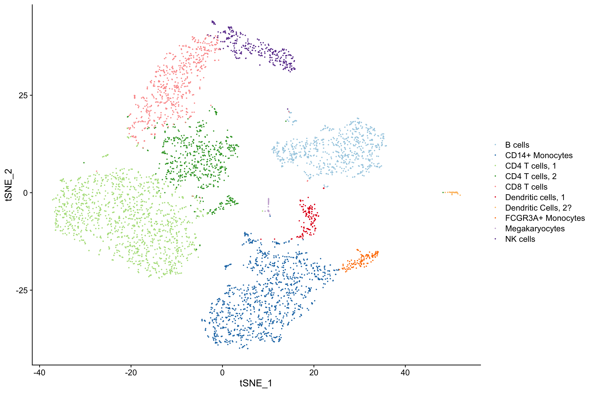
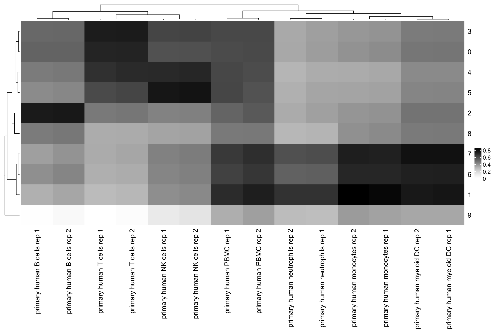
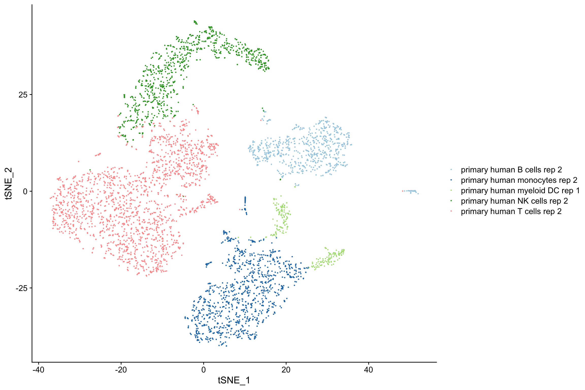
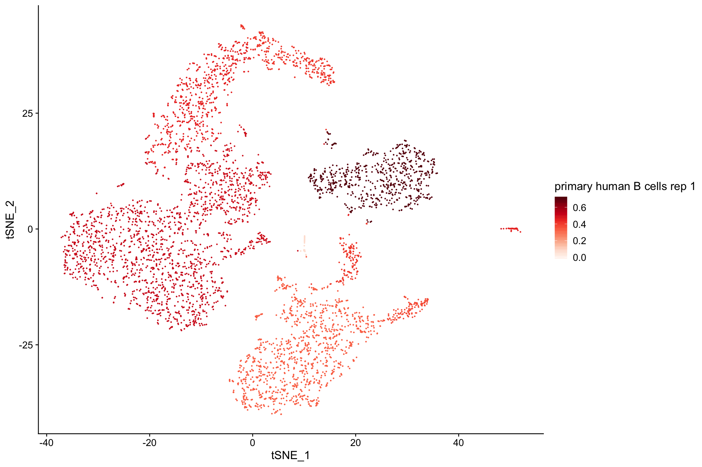
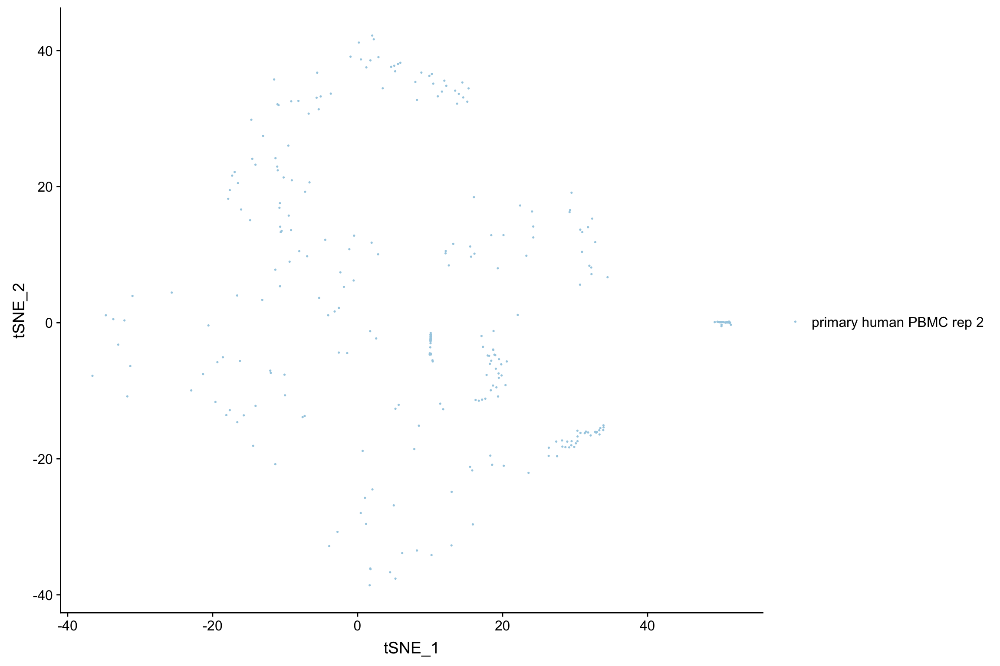
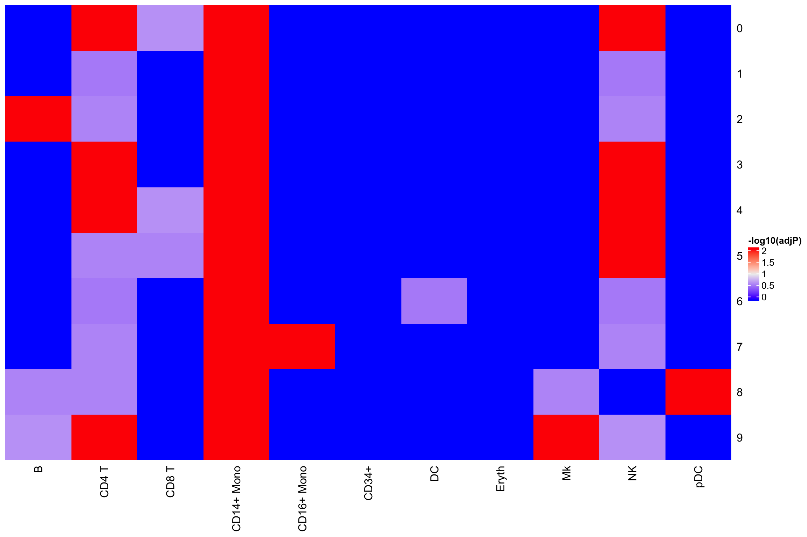

clustifyR?Single cell transcriptomes are difficult to annotate without extensive knowledge of the underlying biology of the system in question. Even with this knowledge, accurate identification can be challenging due to the lack of detectable expression of common marker genes defined by bulk RNA-seq, flow cytometry, other single cell RNA-seq platforms, etc.
clustifyR solves this problem by providing functions to automatically annotate single cells or clusters using bulk RNA-seq data or marker gene lists (ranked or unranked). Additional functions allow for exploratory analysis of calculated similarities between single cell RNA-seq datasets and reference data.
In this example, we take an example 10x Genomics 3’ scRNA-seq dataset comprised of peripheral blood mononuclear cells from a healthy human donor and annotate the cell clusters (identified using Seurat) using bulk RNA-seq data derived from isolated PBMC cell populations.
library(clustifyR)
# load pacakge data
data("pbmc4k_matrix")
data("pbmc4k_meta")
data("pbmc4k_vargenes")
data("pbmc_bulk_matrix")
# plot tSNE using known identities
plot_tsne(pbmc4k_meta, feature = "classified")
clustifyR provides the clustify() function, which takes as input a matrix of single cell RNA-seq expression values, a metadata table with cluster assignments, and a matrix with bulk RNA seq datasets.
As the heatmap below shows, most cell types are accurately classified using the default correlation method (pearson) and a list of highly variable genes in the single cell dataset identified using Seurat’s VMR method.
# run correlation (pearson by default)
res <- clustify(input = pbmc4k_matrix,
ref_mat = pbmc_bulk_matrix,
metadata = pbmc4k_meta,
query_genes = pbmc4k_vargenes,
cluster_col = "cluster")
#> [1] "using # of genes: 2123"
# peek at correlation matrix
res[1:5, 1:5]
#> primary human B cells rep 1 primary human myeloid DC rep 1
#> 0 0.5121501 0.4649881
#> 1 0.3350793 0.7291951
#> 2 0.7082729 0.4695588
#> 3 0.4991370 0.4524539
#> 4 0.4505723 0.4157795
#> primary human monocytes rep 1 primary human neutrophils rep 1
#> 0 0.4101322 0.3750483
#> 1 0.7820196 0.6447463
#> 2 0.3996951 0.3676864
#> 3 0.3965490 0.3700925
#> 4 0.3523080 0.3450042
#> primary human NK cells rep 1
#> 0 0.5598035
#> 1 0.4085961
#> 2 0.4336838
#> 3 0.5983747
#> 4 0.6661795
# view heatmap of correlation coefficients
library(ComplexHeatmap)
library(circlize)
ComplexHeatmap::Heatmap(res, colorRamp2(c(0, 1), c("white", "black")))
clustifyR provides functions to plot single cells using pre-calculated tSNE embeddings (or those from any other dimensionality reduction method), and to plot correlation coefficients on those projections. The plots below show that the highest correlations between these bulk RNA-seq data and the test scRNA-seq dataset are restricted to the correct cell clusters.

# plot correlation coefficients on tSNE for each identity class
plot_cor(res,
pbmc4k_meta,
colnames(res)[1],
cluster_col = "cluster")
#> [[1]]

# available metrics are "hyper", "jaccard", "spearman", "gsea"
res2 <- clustify_lists(pbmc4k_matrix,
per_cell = F,
cluster_info = pbmc4k_meta,
marker = cbmc_m,
marker_inmatrix = T,
metric = "hyper")
# view as heatmap, or plot_best_call
ComplexHeatmap::Heatmap(res2,
cluster_rows = FALSE,
cluster_columns = FALSE,
heatmap_legend_param = list(title = "-log10(adjP)"))
seurat objects, v2 and v3# can even returning a new object with `type` added to metadata.
res <- clustify(
input = s_small,
cluster_col = "res.1",
ref_mat = pbmc_bulk_matrix,
seurat_out = T
)
# or return a correlation matrix
res <- clustify_lists(s_small,
per_cell = F,
marker = pbmc4k_markers,
marker_inmatrix = F,
cluster_col = "res.1",
seurat_out = F
)
# and combined ref matrix and marker info
res <- clustify_nudge(input = s_small,
ref_mat = cbmc_ref,
marker = cbmc_m,
cluster_col = "res.1",
threshold = 0.8,
seurat_out = F)